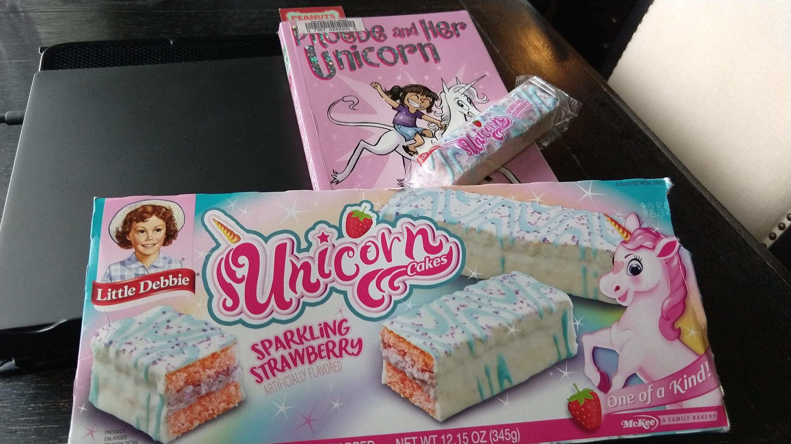
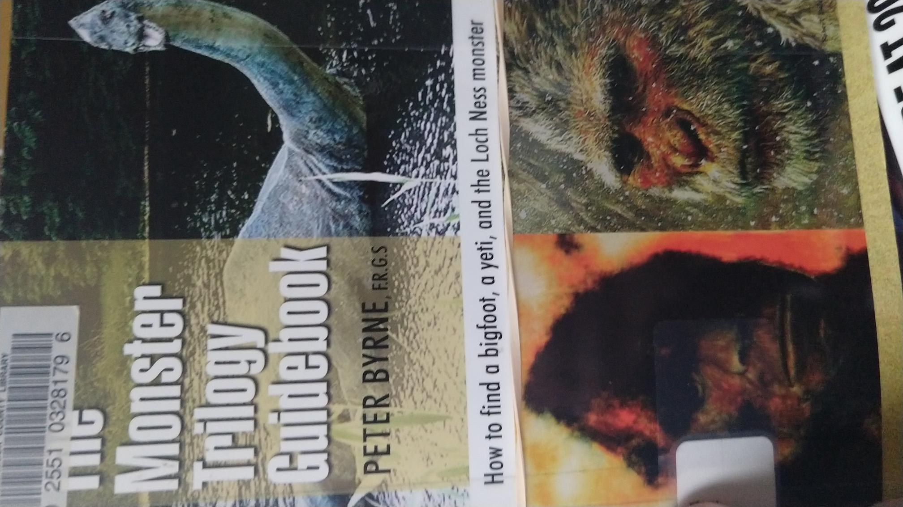

Nanea Woods
From Oregon Live. Nanea Woods started a locker library as a kid…
She set up shelves inside her locker, filled them with books, posted a signup sheet and opened the whole thing to her schoolmates.
"It got to be so big that I started a newsletter over the summer so girls could keep up with what I was reading," Woods says, recalling that she used pink paper to distribute her book reviews.
...a reading group as an adult...
Its newsletter has more than 400 subscribers and its monthly meetings often have to be capped at three dozen attendees, who connect with one another not only through books but also through complementary activities such as meditation and country line dancing.
...and is now organizing Freadom Festival, Portland’s First Annual Black Book Festival.
For the festival's tagline, Woods chose the phrase "Read by any means necessary," a reference to a 1964 speech by civil rights activist Malcolm X in which he called for achieving freedom, justice and equality "by any means necessary."
From the two featured authors:
"I'm so excited," Ajose Fisher says of the festival. "For me, having that freedom to be able to share with the community what Black books and Black storytelling mean right now really was the number one reason why I wanted to be a part of it."
Johnson recalls growing up in Oregon and not reading a book written by a Black author about Black characters until she reached college. The Freadom Festival’s opportunity for Black book lovers of all ages to “celebrate and see themselves in a community, to see stories written by and about Black people, is really meaningful in a community that often doesn’t have an opportunity to celebrate in that way,” she says.
That last quote from Kim Johnson is a wonderful example of representation.
❄
Ronald McNair
An amazing person who did amazing things, and a good example of why intellectual freedom is important in libraries. Library neutrality is just a red herring.
Animation of the story. (by StoryCorps)
As his older brother, Carl, recalls, McNair started dreaming about space in South Carolina, where he grew up. And he wanted to study science. But first, he needed to get his hands on some advanced books. And that was a problem.
"When he was 9 years old, Ron, without my parents or myself knowing his whereabouts, decided to take a mile walk from our home down to the library," Carl tells his friend Vernon Skipper.
The library was public, Carl says — "but not so public for black folks, when you're talking about 1959."
"So, as he was walking in there, all these folks were staring at him — because they were white folk only — and they were looking at him and saying, you know, 'Who is this Negro?'
"So, he politely positioned himself in line to check out his books.
"Well, this old librarian, she says, 'This library is not for coloreds.' He said, 'Well, I would like to check out these books.'
"She says, 'Young man, if you don't leave this library right now, I'm gonna call the police.'
Carl McNair says that his brother, astronaut Ronald McNair, saw possibilities where others only saw closed doors.
"So he just propped himself up on the counter, and sat there, and said, 'I'll wait.' "
The librarian called the police — and McNair's mother, Pearl.
When the police got to the library, Carl says, "Two burly guys come in and say, 'Well, where's the disturbance?'
"And she pointed to the little 9-year-old boy sitting up on the counter.
"And he [the policeman] says, 'Ma'am, what's the problem?'
By then, the boys' mother was on her way, Carl says.
"She comes down there praying the whole way there: 'Lordy, Jesus, please don't let them put my child in jail.' And my mother asks the librarian, 'What's the problem?' "
"He wanted to check out the books and, you know, your son shouldn't be down here," the librarian said, according to Carl.
"And the police officer said, 'You know, why don't you just give the kid the books?'
"And my mother said, 'He'll take good care of them.' "
So, the librarian reluctantly handed over the books. And then, Carl says, "my mother said, 'What do you say?' "
And Ron answered, "Thank you, ma'am."
Eventually, Ronald McNair graduated from North Carolina A&T State University. And in 1976, he earned a Ph.D. from MIT, in physics. Soon after that, he applied to join NASA's astronaut program.
And an example of how important representation in media can be:
For Carl McNair, watching his brother's career was like seeing something from the TV shows of his youth.
"As youngsters, a show came on TV called Star Trek," he says. "Now, Star Trek showed the future — where there were black folk and white folk working together."
And back in the 1960s, that premise didn't seem believable, Carl says.
"I just looked at it as science fiction, 'cause that wasn't going to happen, really," he says. "But Ronald saw it as science possibility."
In that era, NASA's astronauts were celebrities — people like Neil Armstrong.
"So how was a colored boy from South Carolina — wearing glasses, never flew a plane — how was he gonna become an astronaut?" Carl says.
"But Ron was one who didn't accept societal norms as being his norm, you know? That was for other people. And he got to be aboard his own Starship Enterprise."
The list of people whose lives McNair touched includes Charles Bolden. Like McNair, Bolden grew up in South Carolina, pursued a career in science and became an astronaut. Bolden is now the administrator of NASA.
❄

❄
❄
❄
From an interview with Debbie Reese, co-founder of Center for American Indians in Children’s Literature and co-author of a book with Jean Mendoza titled, An Indigenous Peoples' History of the United States for Young People.
This is a book that has factual nuances and complexities and episodes from history that had been left out before that, and they matter because I think part of what [co-author] Jean [Mendoza] and I believe is that idea that a lot of people talk about, that if you don’t know the history, then you’re going to make the same mistake. And I think about the United States, its actions on a global scale, and they have repeated mistakes. And maybe if they had had more honest histories, earlier, it may have made a difference. Of course, we can’t know that, but we should have those kinds of histories be part of everybody’s education.
These are cycles. I don’t know how to make it better, but there’s a tendency to think that “Oh, right, we don’t think that way anymore,” but it doesn’t take long at all to find someone who will think that way. So this idea that the United States is an exceptional place of people that are enlightened, racially or with regard to gender or sexuality, none of that’s true. It’s not an enlightened place, it’s not a special place, and it never was. So it’s better to talk about, I guess, the country as having aspirations. As human beings, as a nation, we aspire to something better than we are at present.
❄
James Baldwin, The Art of Fiction No. 78
Fantastic amazing interview with James Baldwin from The Paris Review, Issue 91, Spring 1984. Some highlights...
On doing the right thing.
...I knew I had to go back to America. And I went. Once I was in the civil-rights milieu, once I’d met Martin Luther King Jr. and Malcolm X and Medgar Evers and all those other people, the role I had to play was confirmed. I didn’t think of myself as a public speaker, or as a spokesman, but I knew I could get a story past the editor’s desk. And once you realize that you can do something, it would be difficult to live with yourself if you didn’t do it.
On writing.
It’s a terrible way to make a living. I find writing gets harder as time goes on. I’m speaking of the working process, which demands a certain amount of energy and courage (though I dislike using the word), and a certain amount of recklessness. I don’t know, I doubt whether anyone—myself at least—knows how to talk about writing. Perhaps I’m afraid to.
On writing fiction vs. non-fiction.
Every form is difficult, no one is easier than another. They all kick your ass. None of it comes easy.
When he writes.
I start working when everyone has gone to bed. I’ve had to do that ever since I was young—I had to wait until the kids were asleep. And then I was working at various jobs during the day. I’ve always had to write at night. But now that I’m established I do it because I’m alone at night.
On where he gets his ideas.
Probably that way for everybody: something that irritates you and won’t let you go. That’s the anguish of it. Do this book, or die. You have to go through that.
On white supremacy.
Now, though, a kid now . . . well, you see, something has happened which no one has really noticed, but it’s very important: Europe is no longer a frame of reference, a standard-bearer, the classic model for literature and for civilization. It’s not the measuring stick. There are other standards in the world. It’s a fascinating time to be living. There’s a whole wide world which isn’t now as it was when I was younger. When I was a kid the world was white, for all intents and purposes, and now it is struggling to remain white—a very different thing.
On minor characters.
Well, minor characters are the subtext, illustrations of whatever it is you’re trying to convey. I was always struck by the minor characters in Dostoyevsky and Dickens. The minor characters have a certain freedom which the major ones don’t. They can make comments, they can move, yet they haven’t got the same weight, or intensity...if you fuck up a minor character you fuck up a major one. They are more a part of the decor—a kind of Greek chorus. They carry the tension in a much more explicit way than the majors.
On white America.
At any rate, few novelists interest me—which has nothing to do with their values. I find most of them too remote for me. The world of John Updike, for instance, does not impinge on my world. On the other hand, the world of John Cheever did engage me. Obviously, I’m not making a very significant judgment about Updike. It’s entirely subjective, what I’m saying. In the main, the concerns of most white Americans (to use that phrase) are boring, and terribly, terribly self-centered. In the worst sense. Everything is contingent, of course, on what you take yourself to be.
On how to become a writer.
Write. Find a way to keep alive and write. There is nothing else to say. If you are going to be a writer there is nothing I can say to stop you; if you’re not going to be a writer nothing I can say will help you. What you really need at the beginning is somebody to let you know that the effort is real.
On talent.
Talent is insignificant. I know a lot of talented ruins. Beyond talent lie all the usual words: discipline, love, luck, but, most of all, endurance.
❄
Library Neutrality
Library neutrality. Should libraries play it like the Swiss advocating for neither side, or play it like John Matrix in Commando raining social justice down upon the unrighteous?
Librarian: Remember when I said I was going to forgive your fine?
Patron: That’s right, librarian. You did!
Librarian: I lied.
What it comes down to is that library neutrality isn’t a thing. It's been talked about a lot...a lot a lot a lot a lot, yet it's not mentioned at all by the American Library Association (who really don't mind sharing their thoughts on how libraries should be run) or the Oregon Library Association (who are a group of really wonderful and intelligent people who would have mentioned something about it by now).
(To see if your particular local library association might mention library neutrality you'll have to check yourself, I'm too lazy to look any further.)*
There is a single mention of library neutrality on the State Library of Oregon website in a document of the State Library Board meeting on 4 April 2022 which reads, "Materials should not be proscribed or removed because of partisan or doctrinal disapproval. This professional stance is known as 'neutrality.'"
That particular professional stance is less about neutrality and more about the part of intellectual freedom that prescribes fighting against censorship. And just what is intellectual freedom? Intellectual freedom is defined by the ALA as, "the right of every individual to both seek and receive information from all points of view without restriction. It provides for free access to all expressions of ideas through which any and all sides of a question, cause or movement may be explored."
(I can't believe ALA doesn't use the Oxford comma.)
So what does all this (besides the Oxford comma thing) mean? Library neutrality is just a red herring, there's no objective definition of it and it should not be treated like a core tenet of the profession. (It also means intellectual freedom is very important and controversial in the library world, but since it has a widely understood definition, discussions about it are possible.)
* Library Neutrality is mentioned by the International Federation of Library Associations and Institutions in its IFLA Code of Ethics for Librarians and other Information Workers (full version) but the places it’s mentioned aren’t actually talking about neutrality. They are actually talking about:
❄
Library Courier
Courier is a very dangerous job in the library world. Shuttling books back and forth ain’t for the faint of heart. As you can see from the picture below, the courier needs protection from the library books. It’s not that the books are evil as such, but they are off the shelf and away from their friends which means they’re scared, confused, and likely to attack until they find themselves back in a library or in the hands of a patron.
Nothing is better to a library book than being in the hands of a patron.
This van just had new security equipment installed but the courier is far braver than I, those books could muscle through those bars at any moment and do some serious damage.

❄

The only valid response to being asked to do reader's advisory.
Readers' advisory sucks. Books are such a personal thing. It's actually one of the hardest parts of my job. Luckily there are many tools available to patrons to help them discover new books.
❄
Trial of Ulysses
5 F. Supp. 182 (1933)
UNITED STATES
v.
ONE BOOK CALLED "ULYSSES."
District Court, S. D. New York.
December 6, 1933.
The U.S. government tried denying James Joyce's Ulysses "admittance into the United States." The government's motion was for a decree of forfeiture and destruction. The judge read the book to determine what was what. Here's some of what he said about it.
It would've been too difficult for a jury to read it:
It seems to me that a procedure of this kind is highly appropriate in libels such as this for the confiscation of books. It is an especially advantageous procedure in the instant case because, on account of the length of "Ulysses" and the difficulty of reading it, a jury trial would have been an extremely unsatisfactory, if not an almost impossible method of dealing with it.
Ulysses is a tough read:
"Ulysses" is not an easy book to read or to understand...The study of "Ulysses" is...a heavy task.
The judge liked and loathed the book:
Furthermore, "Ulysses" is an amazing tour de force when one considers the success which has been in the main achieved with such a difficult objective as Joyce set for himself. As I have stated, "Ulysses" is not an easy book to read. It is brilliant and dull, intelligible and obscure, by turns. In many places it seems to me to be disgusting, but although it contains, as I have mentioned above, many words usually considered dirty, I have not found anything that I consider to be dirt for dirt's sake. Each word of the book contributes like a bit of mosaic to the detail of the picture which Joyce is seeking to construct for his readers.
Ulysses was sexy but not sexy:
...reading "Ulysses" in its entirety, as a book must be read on such a test as this, did not tend to excite sexual impulses or lustful thoughts, but that its net effect on them was only that of a somewhat tragic and very powerful commentary on the inner lives of men and women..."Ulysses" may, therefore, be admitted into the United States.
❄
AmazingAwesomeness has bequeathed unto me some very tasty unicorn cakes to eat while I read Phoebe and Her Unicorn by Dana Simpson. Aren't I the luckiest librarian in all the land?

❄
Oregon Coast Traffic
❄
Intellectual Freedom and Holocaust Denial
Should books promoting Holocaust denial be included in a public library's collection? An article about a panel at the ALA conference in Washington DC from Jewish Insider covered the controversy.
Nancy Pearl, a librarian so popular she has her own action figure, stated:
"What did I not want to add in the collection? Personally, I did not want to add Holocaust-denying books. That was offensive to me. Did I think we needed them? Sad to say, yes," said Pearl, a nationally known librarian, according to a livestream of the panel viewed by Jewish Insider. "But we talk about - we're anti, we shouldn't ban books. It's much more nuanced and it's much more difficult than one often tends to think that it is."
In response:
"Kelsey Bogan, a Pennsylvania-based high school librarian, tweeted from the conference, setting off a flood of angry responses from conferencegoers and others who work in the field."
The tweet reads:
At an ALA session about "Uniting Against book Bans" today there was a sentiment made by panelists that we even must include Holocaust denial books. Holocaust denial is harmful misinformation. I'm urging @UABookBans @Nancy_Pearl @JasonReynolds83 to please reconsider this stance
Some of the responses on Bogan's thread:
Wait, were they advocating that we including verifiably factual incorrect information? Do we not care about accuracy anymore? Because that has always been one of the important standards.
Well im not sure that was their intended message but it is what they said. I think they were trying to convey that whole outdated concept of how "all sides" need to be represented, but even that (which I still disagree w) shld be opinion stuff, not actual misinfo stuff m, surely
There is no 'all sides' to the Holocaust and I fucking hate that we have to fucking clarify that.
People don't have the skills to evaluate info, to determine if it is fact or opinion. They believe what they read in bks. To hold bks that present opinions as facts is disingenuous. By all means have a para in a bk that states an opinion but it should be clear this is what it is.
Nope nope nope. That's a terrible precedent to allow harmful misinformation to be in the shelves as if it were credible
Who said their should be holocaust denial books? That is antithetical to the mission of providing accurate information.
There is no neutrality when it comes to hate. And not facts? I don't want to call it misinformation anymore. That sounds too soft. Fake news has a weird connotation. This is one of the many reasons I am reconsidering membership. I dipped and came back.
Like for a regular library's collection they said that? Unless you have a legit research need for that garbage, you absolutely don't need to consider that topic at all. That is jacked af.
Before responding to the tweets above, I'd like to share a page from the Auschwitz-Birkenau Memorial and Museum on Holocaust denial, and a quote from the page:
Despite the fact that the tens of thousands of prisoners who survived Auschwitz were witnesses to the crimes committed there; despite the fact that they left behind thousands of depositions, accounts, and memoirs; despite the fact that considerable quantities of documents, photographs, and material objects remain from the camp—despite all of this, there are people and organizations who deny that hundreds of thousands of people were murdered in this camp, that gas chambers operated there, or that the crematoria could burn several thousand corpses per day. In other words, they deny that Auschwitz was the scene of genocide.
I am a proponent of intellectual freedom, which is "the right of every individual to both seek and receive information from all points of view without restriction. It provides for free access to all expressions of ideas through which any and all sides of a question, cause or movement may be explored." I disagree with Bogan and many of the responses I saw to her tweet.
Bogan called Holocaust denial "harmful misinformation." Harmful misinformation is not a reason to not include a book in the library. For example, just about every book from a political figure or talking head that's currently sitting on a public library's bookshelf: Newt Gingrich, Barack Obama, Ted Cruz, Michelle Obama, Donald Trump, Hillary Clinton, Sarah Palin, Bill Clinton, Glenn Beck, Al Franken, Bill O'Reilly, Kellyanne Conway, Candace Owens, and Rachel Maddow. This is merely the beginnings of a list of books a patron can find in the library with harmful information in them.
Non-fiction does not mean factual. I would refer you to the non-fiction sections of your public library with materials about gnomes, healing crystals, astrology, Atlantis, werewolves, The Bible, The Koran, and The Gospel of the Flying Spaghetti Monster. Non-fiction is, "any document or media content that attempts, in good faith, to provide accurate information regarding a real-world topic. Nonfictional content may be presented either objectively or subjectively." Frankly, I think non-fiction is even less factual than that, non-fiction basically seems to be things and events that people profess to be true.
Intellectual freedom means having information available from all sides. Of course the Holocaust happened, but finding out why people don't believe it did is important. I've never read a Holocaust denial book, though I will now, but I have read a book that is currently wrapped in controversy: The 1619 Project. I am such a fan of 1619 and thought it made so much sense that when I heard there was a counter-argument laid out in a book called 1620: A Critical Response to the 1619 Project I wanted to read it immediately to see what it said and see where it was coming from. I read it. 1620 was unimpressive. Poor arguments. Poor accusations. A quote from the first couple of pages of the book made the biases of the author, Peter Wood, very clear: "The 1619 Project aligns with the views of those on the progressive left who hate America..." The book went downhill from there. Its major points seem to be that there wasn't that much slavery in America, slavery wasn't all that bad a deal for the slaves, and slaves could eventually work themselves out of slavery and own their own slaves. Wood then takes potshots at Nikole Hannah-Jones and The NY Times.
1620 was awful, and if I hadn't read it I would not have known in what specific ways it was awful. I would not have known the thoughts behind the arguments against 1619. I'm glad I read 1620 and I'm glad I didn't have to pay good money to read it. I'm very glad it was available at my public library. I am very thankful for intellectual freedom.
Getting back to the responses to Bogan's Twitter thread, I'm worried that a librarian stated "people don't have thee skills to evaluate info." Not only is it a rather low opinion of people, but part of our jobs as public library librarians is to promote information literacy, "To be information literate, a person must be able to recognize when information is needed and have the ability to locate, evaluate, and use effectively the needed information." Information literacy and information literacy instruction are core components of the mission of the public library.
Librarians try to supply authoritative information that is "accurate and credible," this is true. It is accurate and credible that there are Holocaust deniers, and as librarians we should find the authoritative sources that state this.
Finally? Library neutrality. There is no neutrality when it comes to hate - Truth! - but neutrality in libraries is a red herring. Neutrality in public libraries should not be a thing. Intellectual freedom in public libraries should very much be a thing. I'm not suggesting that the entirety of a public library budget should be spent on Holocaust denial books. I am suggesting that an authoritative book or two on the subject would go a long way to providing intellectual freedom.
❄

❄
Stupid O'clock.
❄
bell hooks' Essay: Love as the Practice of Freedom
It would be so easy to quote the entire darned thing, so go read the entire darned thing! Here's a bit to get you going...
Without an ethic of love shaping the direction of our political vision and our radical aspirations, we are often seduced, in one way or the other, into continued allegiance to systems of domination—imperialism, sexism, racism, classism. It has always puzzled me that women and men who spend a lifetime working to resist and oppose one form of domination can be systematically supporting another. I have been puzzled by powerful visionary black male leaders who can speak and act passionately in resistance to racial domination and accept and embrace sexist domination of women, by feminist white women who work daily to eradicate sexism but who have major blind spots when it comes to acknowledging and resisting racism and white supremacist domination of the planet. Critically examining these blind spots, I conclude that many of us are motivated to move against domination solely when we feel our self-interest directly threatened. Often, then, the longing is not for a collective transformation of society, an end to politics of dominations, but rather simply for an end to what we feel is hurting us. This is why we desperately need an ethic of love to intervene in our selfcentered longing for change. Fundamentally, if we are only committed to an improvement in that politic of domination that we feel leads directly to our individual exploitation or oppression, we not only remain attached to the status quo but act in complicity with it, nurturing and maintaining those very systems of domination. Until we are all able to accept the interlocking, interdependent nature of systems of domination and recognize specific ways each system is maintained, we will continue to act in ways that undermine our individual quest for freedom and collective liberation struggle.
❄
Jedediah Smith

❄
James Webb Space Telescope Niftiness
From Dr. Alyssa Goodman, "the Robert Wheeler Willson Professor of Applied Astronomy at Harvard University, coDirector for Science at the Radcliffe Institute for Advanced Study, and a Research Associate of the Smithsonian Institution," comes a groovy 1 minute and 14 second presentation on just how nifty the JWST really is.
You can play with the same opacity and zoom yourself here. (via @ADavidWeigel)
You can play with all the new images released by NASA here. (via @NASA SCoPE)
So many stars. They should have sent a poet.
❄
Gabriel García Márquez, The Art of Fiction No. 69
Fantastic amazing interview with Gabriel García Márquez from The Paris Review, No. 82, Winter 1981. Some highlights...
INTERVIEWER
How do you feel about using the tape recorder?GABRIEL GARCÍA MÁRQUEZ
The problem is that the moment you know the interview is being taped, your attitude changes. In my case I immediately take a defensive attitude. As a journalist, I feel that we still haven’t learned how to use a tape recorder to do an interview. The best way, I feel, is to have a long conversation without the journalist taking any notes. Then afterward he should reminisce about the conversation and write it down as an impression of what he felt, not necessarily using the exact words expressed. Another useful method is to take notes and then interpret them with a certain loyalty to the person interviewed. What ticks you off about the tape recording everything is that it is not loyal to the person who is being interviewed, because it even records and remembers when you make an ass of yourself. That’s why when there is a tape recorder, I am conscious that I’m being interviewed; when there isn’t a tape recorder, I talk in an unconscious and completely natural way.INTERVIEWER
Well, you make me feel a little guilty using it, but I think for this kind of an interview we probably need it.GARCÍA MÁRQUEZ
Anyway, the whole purpose of what I just said was to put you on the defensive.
INTERVIEWER
How did she express the "fantastic" so naturally?GARCÍA MÁRQUEZ
What was most important was the expression she had on her face. She did not change her expression at all when telling her stories, and everyone was surprised. In previous attempts to write One Hundred Years of Solitude, I tried to tell the story without believing in it. I discovered that what I had to do was believe in them myself and write them with the same expression with which my grandmother told them: with a brick face.INTERVIEWER
There also seems to be a journalistic quality to that technique or tone. You describe seemingly fantastic events in such minute detail that it gives them their own reality. Is this something you have picked up from journalism?GARCÍA MÁRQUEZ
That’s a journalistic trick which you can also apply to literature. For example, if you say that there are elephants flying in the sky, people are not going to believe you. But if you say that there are four hundred and twenty-five elephants flying in the sky, people will probably believe you. One Hundred Years of Solitude is full of that sort of thing. That’s exactly the technique my grandmother used. I remember particularly the story about the character who is surrounded by yellow butterflies. When I was very small there was an electrician who came to the house. I became very curious because he carried a belt with which he used to suspend himself from the electrical posts. My grandmother used to say that every time this man came around, he would leave the house full of butterflies. But when I was writing this, I discovered that if I didn’t say the butterflies were yellow, people would not believe it. When I was writing the episode of Remedios the Beauty going to heaven, it took me a long time to make it credible. One day I went out to the garden and saw a woman who used to come to the house to do the wash and she was putting out the sheets to dry and there was a lot of wind. She was arguing with the wind not to blow the sheets away. I discovered that if I used the sheets for Remedios the Beauty, she would ascend. That’s how I did it, to make it credible. The problem for every writer is credibility. Anybody can write anything so long as it’s believed.
INTERVIEWER
Do your novels ever take unexpected twists?GARCÍA MÁRQUEZ
That used to happen to me in the beginning. In the first stories I wrote I had a general idea of the mood, but I would let myself be taken by chance. The best advice I was given early on was that it was all right to work that way when I was young because I had a torrent of inspiration. But I was told that if I didn’t learn technique, I would be in trouble later on when the inspiration had gone and the technique was needed to compensate. If I hadn’t learned that in time, I would not now be able to outline a structure in advance. Structure is a purely technical problem and if you don’t learn it early on you’ll never learn it.
INTERVIEWER
Are there any projects now underway you can discuss?GARCÍA MÁRQUEZ
I’m absolutely convinced that I’m going to write the greatest book of my life, but I don’t know which one it will be or when. When I feel something like this—which I have been feeling now for a while—I stay very quiet, so that if it passes by I can capture it.
❄
This deer may have eaten too many of my pretty, pretty flowers. Jerk. Is there ex-lax for deer?
❄
"Ten years ago, on August 5, 2012, a white nationalist entered a Sikh gurdwara in Oak Creek, Wisconsin – and opened fire. Seven beloved community members were ultimately killed. It was the deadliest massacre of Sikhs on U.S. soil ever. Today, our wounds are still open and white nationalist violence continues to bleed us. But we are not victims. We are survivors, healers, artists, and warriors. And our story can show America how to stand in solidarity, bravery, and love."
❄
Luddites
From Pluralistic: Luddites didn't hate technology, they hated who it benefited.
The Luddites were a 19th century guerrilla movement that smashed textile machines, burned factories and threatened their owners. But they were not motivated by a fear of technology, and they were not irrational.
Rather, the Luddites – who took their name from the mythological General Ned Ludd, whose legend included the smashing of weaving-frames – were engaged in the most science-fictional exercise imaginable – asking not what a technology does, but who it does it to and who it does it for.
The Luddites, you see, were skilled weavers, whose intense physical labor produced the textiles that clothed the nation. The difficulty of their trade – both in terms of esoteric knowledge and physical prowess – allowed them to command high wages and good working conditions.
All that was threatened by the advent of textile machines, which produced more fabric in less time, and required less skill. The owners of textile factories bought these machines with profits derived from the weavers' labor, and then used those machines to grind down the weavers. Their hours got longer, their pay got shorter, and many of them were maimed or killed by the new machines.
Here's where the science fiction part comes in. If you were a Martian looking through a telescope at Earth, it would not be obvious to you that these new weaving machines should benefit factory owners, rather than workers. There's nothing inevitable about that arrangement. The machines could just as easily have shortened weavers' working hours, increased their hourly pay, and made more fabric available at lower prices to the public.
The Industrial Revolution's new weaving machines didn't just increase the supply of textiles, nor did it merely upend the balance of power between textile workers and their bosses. It also created unprecedented demand for wool, resulting in the enclosure of the commons and the eviction of farmers who'd worked the land for centuries, turning them into wandering internal refugees. It also drove demand for cotton and vastly increased the profitability of the slave trade.
Weaving engines are ingenious and delightful machines. The Luddites had no beef with the machines – their cause was the social relations that governed those machines. By painting Luddites as mere technophobes, we strip ourselves of the ability to learn from history. The lesson of the Industrial Revolution is that merely asking what a machine does and not who it does it for and to can lead to literal genocide.
❄
A patron told me that all people resemble flowers and I'm a daisy...

❄
Terrorism In The United States
Page 28, Appendix II, Countering Violent Extremism: Actions Needed to Define Strategy and Assess Progress of Federal Efforts, United States Government Accountability Office
...between September 12, 2001 and December 31, 2016. During this period, no persons in the United States were killed in attacks carried out by persons believed to be motivated by extremist environmental beliefs, extremist "animal liberation" beliefs, or extremist far left beliefs.
What is the Threat to the United States Today?, New America
Since 9/11, jihadists have killed 107 people inside the United States. This death toll is similar to that from far-right terrorism (consisting of anti-government, militia, white supremacist, and anti-abortion violence), which has killed 122 people.
Page 18, Homeland Threat Assessment, U.S. Department of Homeland Security:
Among DVEs (Domestic Violent Extremists), racially and ethnically motivated violent extremists — specifically white supremacist extremists (WSEs) — will remain the most persistent and lethal threat in the Homeland.
❄
The excitement of placing a hold on a book titled The Monster Trilogy Guidebook turned bitter disappointment upon arrival seeing Bigfoot and Yeti counted as two separate monsters.

❄
Nichelle Nichols
An article by Jesse J. Holland illustrating how much representation matters.
Over the weekend, when we lost 89-year-old Nichelle Nichols, the actor who portrayed Lt. Nyota Uhura on "Star Trek," we lost more than one of the brightest lights of television and science fiction, one of the most powerful symbols of African American achievement and hope and one of the greatest recruiters of women and minorities into American science and spaceflight. We also lost a strong Black woman who showed the world a future with Black men and women being treated as integral parts of humanity's future and not just background players.
In the same interview in which she mentioned King's excitement at meeting her, Nichols said Whoopi Golberg described to her how, at 9 years old, she had yelled to her family when she first saw "Star Trek": "Come quick, come quick. There's a Black lady on TV, and she ain't no maid!"
Unlike Goldberg, whose childhood excitement over Uhura preceded a career in entertainment, Mae Jemison's excitement over Uhura preceded a career in science. When Jemison climbed aboard the space shuttle Endeavour in 1992, she became the first African American woman in space. She later told C-SPAN: "Lieutenant Uhura was maybe one of the first women you saw every day, every week on television who worked in a technical field. ...And she was African, which was a very different feel for television back then. So, I very much liked Uhura and she was a very important person to me."
Nichols spent her time after "Star Trek's" original television run recruiting women and minorities for NASA, and according to the documentary "Woman in Motion: Nichelle Nichols, Star Trek and the Remaking of NASA," released last year, in just a few months, she brought in over 8,000 applicants, 1,600 of whom were women and 1,000 of whom were people of color, a significantly more diverse pool of applicants than NASA had seen before.
❄
❄
When I get ready to water the lavender plants in our yard I give them a light misting before I start watering them properly. I do this so the bees will know a lot of water is a'comin' and they should amscray. There's usually a couple of bees that I couldn't see that get while the gettin's good. I imagine they go back to the hive and, in their little waggle dance way, tell the other bees, "Phew! Almost got caught in the rain again! Lucky I made it back to the hive before the downpour! Don't go out there!" To which I believe the other bees respond, "Rain? It's dry as a bone out there, you jamoke! Now get back to that lavender plant! The queen ain't gonna feed herself." By the time the bee comes back, I'm on to other lavender plants and the bee, slightly confused by the wet lavender plant, goes on to gather nectar.
I wonder if there are any bee conspiracy theorists, and if so, what their theories are? Some kind of inadvertent bee rain dance? Micro-climates? The great Queen In The Sky messing with them? Or are there rumors of a cruel gardener who somehow makes it seem like rain, who makes fools of unwary bees? A gardener who, perhaps, is used by bee parents to scare bee children into being good bee boys and good bee girls? And do bee conspiracy theorists wear cute little tinfoil hats?
❄
The Civil Rights Act, passed in 1964, "outlaws discrimination based on race, color, religion, sex, and national origin" and "prohibits unequal application of voter registration requirements, racial segregation in schools and public accommodations, and employment discrimination."
The Voting Act, passed in 1965, "prohibits racial discrimination in voting" and was "designed to enforce the voting rights guaranteed by the Fourteenth and Fifteenth Amendments to the United States Constitution, the Act sought to secure the right to vote for racial minorities throughout the country, especially in the South."
On 4 April 1968, only a couple of years after these two pieces of legislation were passed, MLK was murdered.
An essay of his was published posthumously in Playboy, in January 1969, titled "A Testament of Hope." To see the article as it was displayed in Playboy, you can look here. (It's a bit disorienting to see MLK's words interspersed with the occasional Playboy cartoon.)
MLK's words ring as true today as they did in 1969. We need to do much better.
Systemic racism has existed in this country longer than we've been a country. We cannot continue to wait to do something about it. White people are hindering efforts and hurting millions.
Whenever I am asked my opinion of the current state of the civil rights movement, I am forced to pause; it is not easy to describe a crisis so profound that it has caused the most powerful nation in the world to stagger in confusion and bewilderment. Today's problems are so acute because the tragic evasions and defaults of several centuries have accumulated to disaster proportions. The luxury of a leisurely approach to urgent solutions - the ease of gradualism - was forfeited by ignoring the issues for too long. The nation waited until the black man was explosive with fury before stirring itself even to partial concern. Confronted now with the interrelated problems of war, inflation, urban decay, white backlash and a climate of violence, it is now forced to address itself to race relations and poverty, and it is tragically unprepared. What might once have been a series of separate problems now merge into a social crisis of almost stupefying complexity.
I am not sad that black Americans are rebelling; this was not only inevitable but eminently desirable. Without this magnificent ferment among Negroes, the old evasions and procrastinations would have continued indefinitely. Black men have slammed the door shut on a past of deadening passivity. Except for the Reconstruction years, they have never in their long history on American soil struggled with such creativity and courage for their freedom. These are our bright years of emergence; though they are painful ones, they cannot be avoided.
Yet despite the widening of our stride, history is racing forward so rapidly that the Negro's inherited and imposed disadvantages slow him down to an infuriating crawl. Lack of education, the dislocations of recent urbanization and the hardening of white resistance loom as such tormenting roadblocks that the goal sometimes appears not as a fixed point in the future but as a receding point never to be reached. Still, when doubts emerge, we can remember that only yesterday Negroes were not only grossly exploited but negated as human beings. They were invisible in their misery. But the sullen and silent slave of 110 years ago, an object of scorn at worst or of pity at best, is today’s angry man. He is vibrantly on the move; he is forcing change, rather than waiting for it in pathetic futility. In less than two decades, he has roared out of slumber to change so many of his life’s conditions that he may yet find the means to accelerate his march forward and overtake the racing locomotive of history.
America needs to acknowledge its flaws. Change needs to happen at the systemic level. Black people have been cheated and oppressed for centuries leading to, amongst many other things, inferior education, health care, housing, and employment.
Why is the issue of equality still so far from solution in America, a nation that professes itself to be democratic, inventive, hospitable to new ideas, rich, productive and awesomely powerful? The problem is so tenacious because, despite its virtues and attributes, America is deeply racist and its democracy is flawed both economically and socially. All too many Americans believe justice will unfold painlessly or that its absence for black people will be tolerated tranquilly.
Justice for black people will not flow into society merely from court decisions nor from fountains of political oratory. Nor will a few token changes quell all the tempestuous yearnings of millions of disadvantaged black people. White America must recognize that justice for black people cannot be achieved without radical changes in the structure of our society. The comfortable, the entrenched, the privileged cannot continue to tremble at the prospect of change in the status quo.
Stephen Vincent Benét had a message for both white and black Americans in the title of a story, "Freedom Is a Hard Bought Thing." When millions of people have been cheated for centuries, restitution is a costly process. Inferior education, poor housing, unemployment, inadequate health care - each is a bitter component of the oppression that has been our heritage. Each will require billions of dollars to correct. Justice so long deferred has accumulated interest and its cost for this society will be substantial in financial as well as human terms. This fact has not been fully grasped, because most of the gains of the past decade were obtained at bargain rates. The desegregation of public facilities cost nothing; neither did the election and appointment of a few black public officials.
America is divided, confused, and hurting: systemic racism, poverty, obscene wealth, military-industrial complex, and housing. Life, liberty, and the pursuit of happiness must happen for all.
Millions of Americans are coming to see that we are fighting an immoral war that costs nearly 30 billion dollars a year, that we are perpetuating racism, that we are tolerating almost 40,000,000 poor during an overflowing material abundance. Yet they remain helpless to end the war, to feed the hungry, to make brotherhood a reality; this has to shake our faith in ourselves. If we look honestly at the realities of our national life, it is clear that we are not marching forward; we are groping and stumbling; we are divided and confused. Our moral values and our spiritual confidence sink, even as our material wealth ascends. In these trying circumstances, the black revolution is much more than a struggle for the rights of Negroes. It is forcing America to face all its interrelated flaws - racism, poverty, militarism and materialism. It is exposing evils that are rooted deeply in the whole structure of our society. It reveals systemic rather than superficial flaws and suggests that radical reconstruction of society itself is the real issue to be faced.
It is time that we stopped our blithe lip service to the guarantees of life, liberty, and pursuit of happiness. These fine sentiments are embodied in the Declaration of Independence, but that document was always a declaration of intent rather than of reality. There were slaves when it was written; there were still slaves when it was adopted; and to this day, black Americans have not life, liberty nor the privilege of pursuing happiness, and millions of poor white Americans are in economic bondage that is scarcely less oppressive. Americans who genuinely treasure our national ideals, who know they are still elusive dreams for all too many, should welcome the stirring of Negro demands. They are shattering the complacency that allowed a multitude of social evils to accumulate. Negro agitation is requiring America to re-examine its comforting myths and may yet catalyze the drastic reforms that will save us from social catastrophe.
White people need to wake up and see what is happening to BIPOC. White people cannot save BIPOC, rather, white people need to listen to what BIPOC are saying. Change will take massive effort, time, and cost.
In indicting white America for its ingrained and tenacious racism, I am using the term "white" to describe the majority, not all who are white. We have found that there are many white people who clearly perceive the justice of the Negro struggle for human dignity. Many of them joined our struggle and displayed heroism no less inspiring than that of black people. More than a few died by our side; their memories are cherished and are undimmed by time.
Yet the largest part of white America is still poisoned by racism, which is as native to our soil as pine trees, sagebrush and buffalo grass. Equally native to us is the concept that gross exploitation of the Negro is acceptable, if not commendable. Many whites who concede that Negroes should have equal access to public facilities and the untrammeled right to vote cannot understand that we do not intend to remain in the basement of the economic structure; they cannot understand why a porter or a housemaid would dare dream of a day when his work will be more useful, more remunerative and a pathway to rising opportunity. This incomprehension is a heavy burden in our efforts to win white allies for the long struggle.
But the American Negro has in his nature the spiritual and worldly fortitude to eventually win his struggle for justice and freedom. It is a moral fortitude that has been forged by centuries of oppression. In their sorrow and their hardship, Negroes have become almost instinctively cohesive. We band together readily; and against white hostility, we have an intense and wholesome loyalty to one another. But we cannot win our struggle for justice all alone, not do I think that most Negroes want to exclude well-intentioned whites from participation in the black revolution. I believe there is an important place in our struggle for white liberals and I hope that their present estrangement from our movement is only temporary. But many white people in the past joined our movement with a kind of messianic faith that they were going to save the Negro and solve all of his problems very quickly. They tended, in some instances, to be rather aggressive and insensitive to the opinions and abilities of the black people with whom they were working; this has been especially true of students. In many cases, they simply did not know how to work in a supporting, secondary role. I think this problem became most evident when young men and women from elite Northern universities came down to Mississippi to work with the black students at Tougaloo and Rust colleges, who were not quite as articulate, didn't type quite as fast and were not as sophisticated. Inevitably, feeling of white paternalism and black inferiority became exaggerated. The Negroes who rebelled against white liberals were trying to assert their own equality and to cast off the mantle of paternalism.
We are the product of a culture of systemic racism. We are taught a history that fails in telling the truth.
The implications of true racial integration are more than just national in scope. I don't believe we can have world peace until America has an "integrated" foreign policy. Our disastrous experiences in Vietnam and the Dominican Republic has been, in one sense, a result of racist decision making. Men of the white West, whether or not they like it, have grown up in a racist culture, and their thinking is colored by that fact. They have been fed on a false mythology and tradition that blinds them to the aspirations and talents of other men. They don't really respect anyone who is not white. But we simply cannot have peace in the world without mutual respect. I honestly feel that a man without racial blinders - or, even better, a man with personal experience of racial discrimination - would be in a a much better position to make policy decisions and to conduct negotiations with the underprivileged and emerging nations of the world (or even with Castro, for that matter) than would an Eisenhower or a Dulles.
"Voting should be as easy and accessible as possible, and in many cases it is. But in recent years, more than 400 anti-voter bills have been introduced in 48 states." This is happening largely because of what MLK says here.
One of the most basic weapons in the fight for social justice will be the cumulative political power of the Negro. I can foresee the Negro vote becoming consistently the decisive vote in national elections. It is already decisive in states that have large numbers of electoral votes. Even today, the Negroes in New York City strongly influence how New York State will go in national elections, and the Negroes of Chicago have a similar leverage in Illinois. Negroes are even the decisive balance of power in the elections in Georgia, South Carolina and Virginia. So the party and the candidate that get the support of the Negro voter in national elections have a very definite edge, and we intend to use this fact to win advances in the struggle for human rights. I have every confidence that the black vote will ultimately help unseat the diehard opponents of equal rights in Congress - who are, incidentally, reactionary on all issues. But the Negro community cannot win this victory alone; indeed, it would be an empty victory even if the Negroes could win it alone. Intelligent men of good will everywhere must see this as their task and contribute to its support.
Police need to respect people.
But there is no single answer to the plight of the American Negro. Conditions and needs vary greatly in different sections of the country. I think that the place to start, however, is in the area of human relations, and especially in the area of community - police relations. This is a sensitive and touchy problem that has rarely been adequately emphasized. Virtually every riot has begun from some police action. If you try to tell the people in most Negro communities that the police are their friends, they just laugh at you. Obviously, something desperately needs to be done to correct this. I have been particularly impressed by the fact that even in the state of Mississippi, where the FBI did a significant training job with the Mississippi police, the police are much more courteous to Negroes than they are in Chicago or New York. Our police forces simply must develop an attitude of courtesy and respect for the ordinary citizen. If we can just stop policemen from using profanity in their encounters with black people, we will have accomplished a lot. In the larger sense, police must cease being occupation troops in the ghetto and start protecting its residents. Yet very few cities have really faced up to this problem and tried to do something about it. It is the most abrasive element in Negro - white relations, but it is the last to be scientifically and objectively appraised.
America must change.
Today's dissenters tell the complacent majority that the time has come when further evasion of social responsibility in a turbulent world will court disaster and death. America has not yet changed because so many think it need not change, but this is the illusion of the damned. America must change because 23,000,000 black citizens will no longer live supinely in a wretched past. They have left the valley of despair; they have found strength in struggle; and whether they live or die, they shall never crawl nor retreat again. Joined by white allies, they will shake the prison walls until they fall. America must change.
❄

❄
Layla F. Saad defines the term "white supremacy" in her book Me and White Supremacy.
White Supremacy is a racist ideology that is based upon the belief that white people are superior in many ways to people of other races and that therefore, white people should be dominant over other races. White supremacy is not just an attitude or a way of thinking. It also extends to how systems and institutions are structured to uphold this white dominance.
White supremacy is a system you have been born into. Whether or not you have known it, it is a system that has granted you unearned privileges, protection, and power. It is also a system that is designed to keep you asleep and unaware of what having that privilege, protection, and power has meant for people who do not look like you. What you receive for your whiteness comes at a steep cost for those who are not white.
❄
Allowing filming and photography in the library? Some quotes from ALA's Intellectual Freedom Blog.
The law distinguishes between a traditional public forum, or public square, and facilities opened to the public for a particular use or purpose, like a library or a courthouse. Facilities like libraries and courthouses are considered to be limited public forums or non-public forums1 for purposes of the First Amendment. In limited or non-public forums, the government agency administering the space is only obligated to allow those First Amendment activities that are consistent with the nature of the forum, even if the facility is open to the public.
In Kreimer v. Board of Police of Morristown, NJ, an important court opinion addressing a library user’s right to enter and use the library, the court held that because public libraries are a limited public forum, constitutional protection is afforded only to those expressive activities that are consistent with the mission and purpose of the library. A public library is only obligated to permit the public to exercise rights that are consistent with the government’s intent in establishing the library as a limited public forum for the purpose of receiving information and accessing the library’s books, programs, and online resources. According to the Kreimer opinion, other activities, including activities such as photography, filming, petition-gathering, assemblies, and public speeches, may be regulated by the library using reasonable, viewpoint neutral, time, place, and manner rules.
Patron privacy and confidentiality is very important to their intellectual freedom.
❄
What publishers charge libraries for ebooks to provide to patrons is out of control. Publishers will only lease ebooks to libraries through a middleman for a certain period of time (a year or two) and/or a certain number of patron checkouts (after the maximum number of checkouts is reached the library cannot circ the ebook anymore). The following are quotes from an NPR article.
The Internet Archive has countered this with controlled digital lending.
So from the perspective of a borrower, this doesn't really change very much from your e-book borrowing experience. But behind the scenes, it's very different. The Internet Archive doesn't pay to license the e-books in its Open Library project. Instead, the Internet Archive acquires a print copy of the book, and it then makes a digital version available to borrow one at a time. And this model is called controlled digital lending.
You have one physical copy of it. Then you loan out one digital copy, and the physical copy is sequestered. It's not made available for other people to come and get it.
Publishers sued the Internet Archive.
But the publishers sued the archive for copyright infringement, saying the website is copying and distributing books without compensating the people who created that work - the publishers and the authors.
We reached out to the Association of American Publishers. Their general counsel, Terrence Hart, said the Internet Archive is committing systematic theft.
Publishers don't like controlled digital lending. At all.
Part of the tension is for a publisher - they're looking at it and saying, now this thing is digitized, and we're not getting anything for that because you now are just using it and circulating it, but we haven't gotten any money for that. And then our response is, but there was money exchanged when we first bought the physical thing. We did pay for it.
But the publishers say, all right, well, you paid for the print book, but it is still illegal under copyright law to reproduce it, to distribute it or change it into a new format by digitizing it. And the publishers entirely reject the idea of controlled digital lending.
The Internet Archive lawsuit is currently ongoing.
❄
I almost missed it! Happy Hummingbird Day.
Some fun hummingbird facts:
Other nifty places to learn about hummingbirds? Smithsonian Magazine and Audobon.
❄
From the National Oceanic and Atmospheric Administration
Reaching 8,848 meters29,029 feet at its summit, Everest is indeed the highest point above global mean sea level—the average level for the ocean surface from which elevations are measured. But the summit of Mt. Everest is not the farthest point from Earth’s center.
Earth is not a perfect sphere, but is a bit thicker at the Equator due to the centrifugal force created by the planet’s constant rotation. Because of this, the highest point above Earth’s center is the peak of Ecuador’s Mount Chimborazo, located just one degree south of the Equator where Earth’s bulge is greatest. The summit of Chimborazo is 6,268 meters 20,564 feet above sea level. However, due to the Earth’s bulge, the summit of Chimborazo is over 2,072 meters 6,800 feet farther from the center of the Earth than Everest’s peak. That makes Chimborazo the closest point on Earth to the stars.
❄
I recently learned about the earliest known written complaint, the Complaint Tablet to EA-nasir. I wonder how dissatisfied I would have to be at customer service I received to chisel it into clay? Jiminy Cricket, I'm too lazy to star an online review. The complaint was against one EA-nasir of Ur who, according to Nanni, the complainant, furnished "copper delivery of the incorrect grade," dropped the ball, creating "issues with another delivery," and treated his servant poorly.
Just how upsetting would it be to be living in Sumeria, one of the first human civilizations, and all you get out of it is some schlub trying to pull a fast one on ya with substandard copper?
Upsetting enough to break out a chisel and go to town, evidently.
I thought I'd find where current day Ur was. Turns out it's called Tell el-Muqayyar these days. I was surprised to see a Lake Wisconsin in the cradle of civilization. I guess some Minnesota boys named it while deployed there.
In learning a bit more about Ur, I discovered that the Lizard People might be real. Perhaps they created civilization for humans in order to drive us mad with bad customer service and substandard goods and services? Or perhaps they created consumer culture in order to bring about climate change so the earth would be more livable for their people? Wasn't that the plot of a 90s Charlie Sheen movie?
Oh, and it seems Nanni was in good company. Other tablets found in good ol' Ea-nasir's house detail an alarming habit of neither providing the copper paid for nor providing copper of sufficient quality.
❄
Cannibaltooth, who made this comic ages ago, doesn't seem to be online anywhere anymore.
Your little reminder that every single creature that drinks water will die...including you.
Are you anti-water or pro-water?
❄
Elinor Ostrom
It's not all trickle-down economics, political hypocrisy, government surveillance, and corporate control .
There are different ways.
In 2009, Elinor Ostrom, along with oliver e. williamson, was awarded the Nobel Prize in economics. Ostrom, the only woman to ever win the prize, received it "for her analysis of economic governance, especially the commons." She demonstrated "how local property can be successfully managed by local commons without any regulation by central authorities or privatization."
In December 1968, the ecologist and biologist Garrett Hardin had an essay published in the journal Science called ‘The Tragedy of the Commons’. His proposition was simple and unsparing: humans, when left to their own devices, compete with one another for resources until the resources run out. 'Ruin is the destination toward which all men rush, each pursuing his own best interest,' he wrote. 'Freedom in a commons brings ruin to all.' Hardin's argument made intuitive sense, and provided a temptingly simple explanation for catastrophes of all kinds – traffic jams, dirty public toilets, species extinction. His essay, widely read and accepted, would become one of the most-cited scientific papers of all time.
Even before Hardin’s 'The Tragedy of the Commons' was published, however, the young political scientist Elinor Ostrom had proven him wrong. While Hardin speculated that the tragedy of the commons could be avoided only through total privatisation or total government control...
Community-based conservation can’t solve everything, and it doesn’t always succeed in protecting the commons. In many cases, national governments don’t recognise the longstanding land claims of Indigenous and other rural communities, creating uncertainty that interferes with community efforts to manage for the long term. Even well-established systems are vulnerable to internal conflict, and to external pressures ranging from drought to war to global market forces. As Ostrom often reminded her audiences, any strategy can succeed or fail. Community-based conservation is distinctive because many societies have only begun to understand – or remember – its potential. ‘What we have ignored is what citizens can do,’ she said.
Some have summarized Ostrom’s work by saying that institutions other than free markets often work well. But her findings do not conflict with a free economy: she observed communities sustainably managing shared resources without any central planning. Ostrom advocated dispersed decision centers, rather than a top-down hierarchy, because local actors possess information a central planning group cannot. Her skepticism about central planning was based, in part, on how badly top-down solutions worked in poor countries. Furthermore, institutional diversity allows ideas to compete.
❄
Ray Bradbury's There Will Come Soft Rains read by Leonard Nimoy, available at the Internet Archive.
❄
Close the Library
❄
We recently got a new (to us) car. It's the third car we've had in as many years. It's the first car I've ever owned that makes me worry about my eternal soul.
As you can hear in the video above, when it's put in Drive it seems to be chanting something just under the threshold of mere human consciousness. I fear it is calling out to the Heavenly Host or Legion, and unfortnately, those entitites are covered neither by the standard bumper-to-bumper nor powertrain warranties provided by the manufacturer.
Dealers always trying to get you with the add-ons, am I right?
But back up a moment. Three cars in three years? In this economy? With the prices of goods and services soaring as they have? At this time of year? At this time of day? In this part of the country? Localized entirely within your kitchen?
Unfortunately yes. Our truly nifty paid-off car died mere minutes after getting us back safely from a week-long evacuation during the Echo Mountain Complex Fire.
Our second car, a fancy-shmancy thing, turned out to be so fancy-shmancy that even in order to get new tires - aligned? balanced? something like that - we had to bring it back to the dealership 2 1/2 hours away. Nobody more local could work on the darned thing. We'd come across this same problem for other little issues with it and decided to throw ourselves back in the car market. Once more unto the breach, dear friends, once more.
So we thought, perhaps something a tad more domestic? Maybe a hybrid? A PHEV? Something that'll run good on regular gas? Well, it turns out there are, like, two cars available for sale in the entire state of Oregon. Of the two? We inadvertently bought the one that, based on that sound it makes in Drive (seriously, go up there and listen to that sound again...so creepy!), chants to Baphomet, and may require the occasional bit of soul.
Luckily for us, it's a hybrid runnin' regular, so while we may end up in the Netherworld for driving it, we'll be able to afford more worldly possessions while we're on this earthly plane of existence.
❄
From Nuzzle House, the production house that brings you Gestating the Curious Mind and Leaves of Glen, comes a special Halloween edition of Radio Mystery Theater titled, The Possessed Nurse.
This Halloween I’ve decided to copy ‘CBS Radio Mystery Theater’- a show I grew up listening to in the 70s and 80s. Even down to the crappy audio and commercials.
We learn:
Just because you say you’re a nurse, you’re probably not.
If you try hard enough, you can get actual Germans to be guests on your show.
And my sister does a bizarre Minnesota accent.
❄
I love this. So much this. This is important. Fight *for* good things. It still gets rid of bad things and it doesn't allow for a lot of the 'least worst' that's crept into so much of our lives.
From Cory Doctorow's review of The Persuaders by Anand Giridharadas.
Shenker-Osorio wants us to say what we're for, not just what we're against. Not "abolish ICE" but "create a fair immigration policy that respects all families."
So don't lead with the terror of the climate emergency – lead with "ensuring clean, safe air to breathe and water to drink." Lead with "paying people enough to provide for their families," not "fighting low wages and poor working conditions." Instead of "the lack of paid leave," go with "helping people be there for those they love."
When they say "We'll cut taxes and it's good for the economy" and we counter with "We'll raise wages and increase consumption, which is better for the economy,"
❄
Walidah Imarisha gives a phenomenal presentation on racism and white supremacy in Oregon (generalizable to the rest of America) as the keynote speaker for the 22nd Annual Northwest Public Employees Diversity Conference.
…this is why we have to talk about race, because there is the reality of being a person of color in this country and dealing with racism every day that lives in peoples' bodies and causes them immense pain and trauma, and in fact the DSM-V has recategorized racial trauma and racism in the same context as PTSD - Post Traumatic Stress Disorder.
And this has to be clear, I suffered not a horrific, singular, giant, violent event around my race, this is: I got up in the morning, I brushed my teeth, I went to work, I bought my lunch, I went to a movie, I came home, I watched some tv, I went to bed, and that is racial trauma and that is in the same category as PTSD because I did all of that while being a person of color in a racist society.
And that reality, that post traumatic stress of living with racism every day, is living in peoples' bodies and killing them and killing the next generation as well.
And we have to realize that this is not something that came out of nowhere. we have to realize this is rooted in history.
❄
DISCMASTER, an "experimental website to browse and search vintage computer files from archive.org."
The site is DISCMASTER.TEXTFILES.COM, and within its stacks lie multitudes of previously hidden software treasure, and a directed search engine that makes it a top-notch research tool.
The first thing that strikes a visitor to the site is either how strange, or how nostalgic it looks. The site is strikingly simple and references the first few years of the world wide web, when backgrounds were grey by default, and the width of the screen was almost always under 640 pixels. Same with the link colors, and use of (to the modern era) small icons next to the words and links. This is a version of the world wide web long gone.
However, underneath this simple exterior beats the heart of a powerful search engine and an astounding amount of processing that has analyzed millions of files to make them easy to interact with. If your area of research or interest is vintage/historical software, we’ve all been handed a top-class tool to discover long-lost files and bring them back instantly.
From (very roughly) 1989 through to the early 2000s, CD-ROMs (and later DVD-ROMs) were one of the primary ways to transfer heaps of software or large-sized programs to end users. Instead of spending hours or literal days transferring software you may or may not have wanted after you received it, you could go to stores or on-line and purchase a plastic disc that contained between 600-700 megabytes of information on it.
Audio and music files play in the browser. Flash, IFF, Bitmaps, Fonts and more display in preview. Macintosh, PC, Commodore, Atari and more are presented simply, without a mandate to track down the proper utility to figure out what they are.
The developer wrote applications to grind through the contents of a CD-ROM and present them with previews that wouldn’t require anything but a browser to see...In other words, vintage and historical software is back from the obfuscated darkness.
Not only is DISCMASTER groovy, and its site design from the 90s groovy, but there's a bunch of old BBS stuff, advertisements, Shovelware, ASCII art, digests, and much more available at textfiles, a groovy site made by a hoopy frood named Jason Scott.
❄
Andrew Hartzler
You want the power to force your religious beliefs onto everyone else and because you don't have that power you feel like you're being silenced, but you're not. You're just gonna have to learn to coexist with all of us and I'm sure it's not that hard.
- Andrew Hartzler to Aunt Vicky, Rep. Vicky Hartzler who spoke against the Respect for Marriage Act
❄
April Witteveen
Equity and inclusion are not dirty words, and they are not political words. To embrace principles of equity and inclusion is to recognize that we each bring a variety of lived experiences to our work, our education and our social groups.
- April Witteveen, CROOK COUNTY LIBRARY: It has been a pleasure to serve you
caveat lector
.jpg){kind=link}